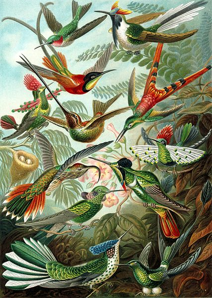

1
2
3
4
5
6
7
- item1
- item2
- item3

Коли́бри[3][4] (лат. Trochilidae) — семейство мелких птиц из отряда стрижеобразных
(Apodiformes). Известно более 350 видов, обитающих в Америке от Аляски и Лабрадора до
Огненной Земли, многие виды эндемичны. Широко распространены в тропических лесах,
особенно на среднегорье. Большую часть рациона колибри составляет богатый углеводами
сладкий нектар цветковых растений, который они добывают с помощью длинного
чувствительного языка. В качестве белковой добавки выступают мелкие членистоногие,
которых птицы ловят в воздухе или снимают с листьев и паутины. Благодаря питанию
нектаром колибри являются опылителями; многие растения Нового Света опыляются
исключительно ими.
Колибри обладают ярким оперением, часто с металлическим блеском. Его цвет зависит от
микроструктуры перьев и меняется при разном освещении. У некоторых представителей семейства
может быть хорошо выраженный хохол или своеобразный воротник. Не очень длинные крылья колибри
включают десять развитых первостепенных и шесть-семь укороченных второстепенных маховых перьев.
Хвост, как правило, в два раза короче сложенных крыльев и состоит из десяти рулевых перьев.
В полёте концы крыльев описывают плоскую восьмёрку. Колибри — единственные в мире птицы,
способные летать хвостом вперёд. Ресурсоёмкий полёт колибри и быстрый обмен веществ предъявляют
высокие требования к внутреннему строению птиц.
Колибри являются полигамными птицами. Самец занимается только оплодотворением, все остальные
заботы по выращиванию потомства берёт на себя самка. Гнёзда колибри обычно очень маленькие,
основным материалом для внешней стенки являются лишайники, мхи, паутина, листья, корешки,
кора, а внутренний слой строится из мягких растительных материалов, перьев и волос.